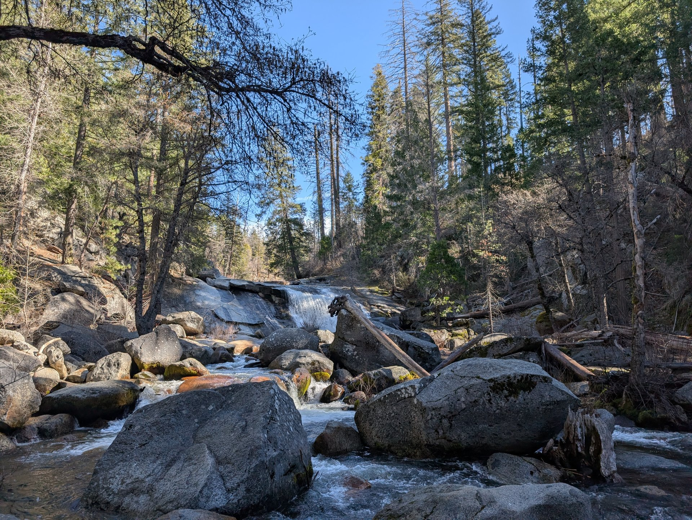
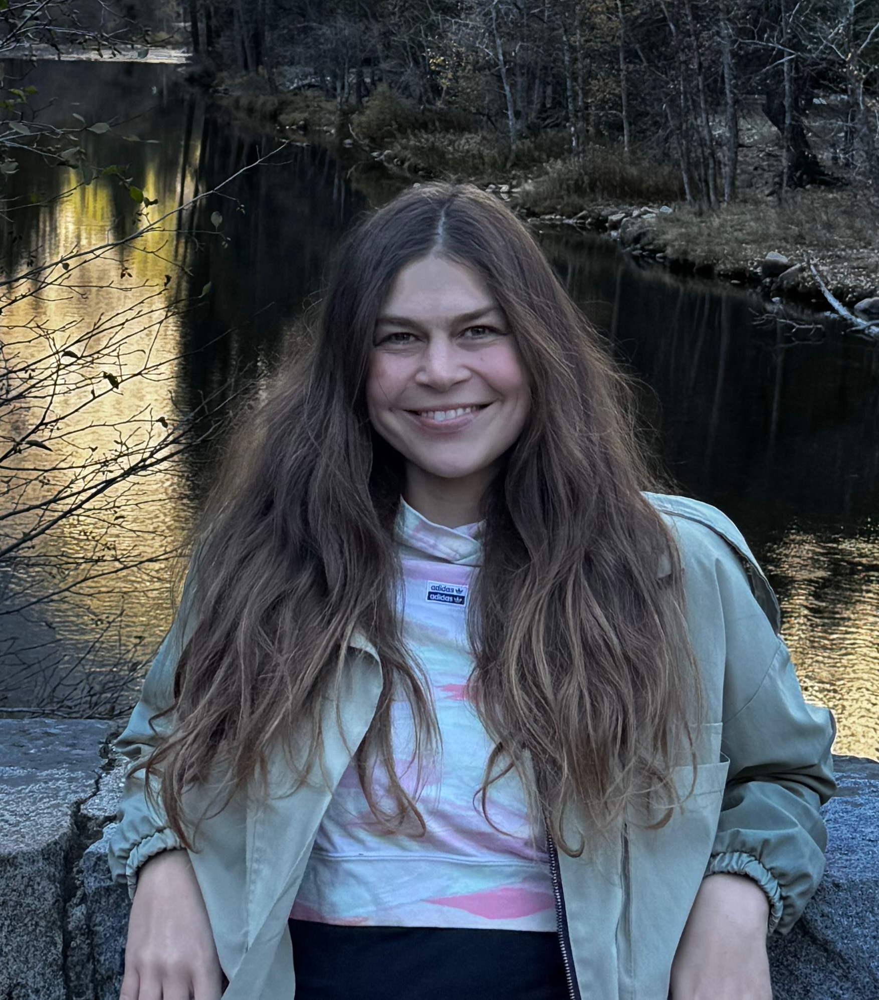
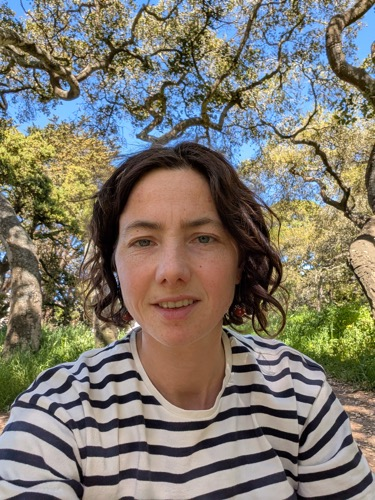

Наши Преподаватели
Преподаватели
Преподаватели - основа любой школы. Мы гордимся нашей командой.

Елена Ленгардт
Основатель и ведущий преподаватель
Елена Ленгардт — основатель русскоязычной лесной школы в Golden Gate Park, Сан-Франциско.
Елена родом из Казани. Она получила экономическое образование и ранее работала в PwC, где у неё выработались сильное чувство ответственности, организованность и профессионализм. Позже она сделала карьеру художника, развив в себе творческое начало, наблюдательность и любознательность к окружающему миру.
После переезда в США четыре года назад и рождения ребенка, взгляды Елены сместились в сторону раннего развития детей. Находясь в поиске подходящей среды для своей дочери Карины, она поняла, как важно создать место, где маленькие дети могли бы проводить больше времени на улице, исследовать природу, свободно двигаться и учиться через реальный опыт.
Вдохновленная этой идеей, Елена создала программу, которую с уверенностью выбрала бы для своего собственного ребенка — ориентированную на природу и на ребенка лесную школу, где дети могут расти любознательными, устойчивыми и быть связанными с миром природы.
В настоящее время Елена изучает дошкольное образование (Early Childhood Education) в Городском колледже Сан-Франциско (City College of San Francisco) и уже набрала 18 кредитов для получения профильного сертификата. Она глубоко верит в необходимость учиться на протяжении всей жизни и продолжает углублять свои знания в области детского развития и педагогики.
Ее бэкграунд в искусстве также формирует подход программы: детей поощряют внимательно наблюдать за природой, творчески выражать себя и исследовать мир с воображением и любопытством.
Как для мамы и педагога, цель Елены проста: создать такое место, куда она хотела бы приводить свою дочь каждый день.
Чаще всего вы можете встретить Елену вместе с детьми в Golden Gate Park — они вместе исследуют тропинки, наблюдают за птицами, собирают листья и открывают для себя маленькие чудеса природы.

Дарья Арцыхович
Основатель и ведущий преподаватель
Вместе с Еленой основала школу Тайга. Большой любитель детей и природы. В свободное время читает (про детей, природу и не только), бегает, вяжет, дружит с людьми. Растит дочь Соню, которой сейчас 7.
По первой профессии - программист, работала в mail.ru и Google.